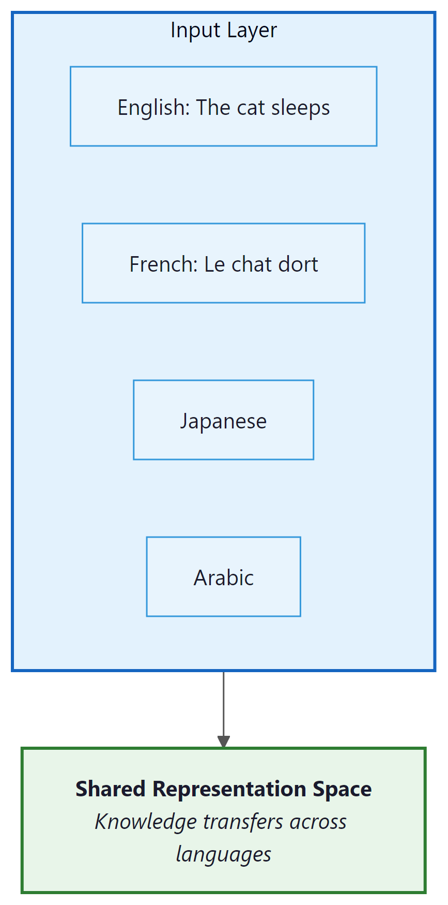

A truly multilingual model must master the grammar of a thousand languages, the idioms of a hundred cultures, and the quiet indignity of being evaluated almost exclusively in English.
Bert, Polyglot AI Agent
Language technology is not linguistically neutral. The vast majority of LLM training data, evaluation benchmarks, and engineering effort is concentrated on English and a handful of other high-resource languages. This creates a world where the roughly 1.5 billion English speakers enjoy capable AI assistants, while the remaining 6.5 billion people receive a degraded experience, if they receive one at all. Multilingual LLMs attempt to bridge this gap through cross-lingual transfer, multilingual pretraining, and targeted adaptation. However, language is deeply intertwined with culture, and serving diverse populations requires more than translation. This section examines how multilingual models work and where they fall short. As we saw in Section 1.7, tokenizer fertility differences create an uneven playing field across languages from the very first processing step.
Prerequisites
This section assumes familiarity with tokenization from Chapter 1 (particularly BPE and vocabulary construction) and the open model families from Section 7.3. Understanding of cross-lingual transfer builds on the attention mechanism from Section 3.1.
7.4.0 Multilingual Pretraining Objectives and the Encoder Lineage
Before surveying how today's multilingual LLMs work, it helps to trace the lineage of multilingual encoders, because almost every modern multilingual model inherits ideas from that line. The pretraining objectives discussed in Section 6.2 (MLM and CLM) extend naturally to multilingual settings, but a dedicated cross-lingual objective turns out to make a measurable difference.
7.4.0.1 From mBERT to XLM to XLM-R
The lineage starts with mBERT (Multilingual BERT, 2018), which was the original BERT trained on the concatenation of Wikipedia in 104 languages with a shared WordPiece vocabulary of about 110,000 subwords. mBERT used exactly the same MLM and NSP recipe as English BERT (see Section 6.2 for the joint loss). The surprise was that mBERT exhibited non-trivial zero-shot cross-lingual transfer: fine-tune the model on a task in English, evaluate on the same task in German or Hindi, and accuracy holds up far better than random. The mechanism is subword overlap (cognates, numbers, shared scripts) combined with the shared Transformer encoder, which forces all languages to live in one representation space.
The original XLM (Lample and Conneau, 2019) made the cross-lingual signal explicit by training on three jointly optimized losses: MLM on single monolingual sentences (as in BERT), CLM on single monolingual sentences (next-token prediction, as in GPT), and TLM (Translation Language Modeling). TLM concatenates a sentence with its translation in another language, separated by a [SEP] token; tokens are masked in both halves at random, so recovering a masked English token requires using the parallel French context as a clue. This explicitly aligns the two languages in representation space. The three XLM losses are summed (with equal weights in the original paper), and only TLM consumes parallel data; MLM and CLM remain monolingual. XLM-R (Conneau et al., 2020) later dropped TLM, showing that pure MLM at scale (100 languages, 2.5 TB of CommonCrawl, 250k SentencePiece tokens) closes most of the cross-lingual gap. mT5 (Xue et al., 2021) brought span corruption to 101 languages, and NLLB-200 (Meta, 2022) pushed the translation side further with a single encoder-decoder serving 200 languages via a mixture-of-experts architecture. Most recently, Aya 23 (Cohere, 2024) showed that targeted multilingual instruction tuning of a strong base model produces stronger per-language quality than scaling raw multilingual pretraining alone.
XLM, mBERT, and most of the original transformer-encoder lineage train with the schedule first written down in Attention Is All You Need (Vaswani et al., 2017), now universally called the Noam schedule: a linear warmup followed by inverse-square-root decay, with the overall scale tied to the inverse square root of the hidden dimension. In practice the warmup phase is what matters for multilingual training: the encoder has to balance gradient signals from dozens of languages with very different sample counts, and starting at a tiny learning rate prevents one high-resource language from dominating early updates and locking in an English-centric tokenizer-embedding alignment that the model later struggles to undo. Modern multilingual LLM pretraining (XLM-R, mT5, NLLB) replaces the pure Noam schedule with a longer linear warmup followed by cosine or inverse-square-root decay, but the underlying intuition (warmup is non-negotiable when training multilingual transformers from scratch) is unchanged.
The most-cited demonstration of mBERT's surprising transfer ability comes from Pires et al. (2019). Take mBERT (110M params, 104-language WordPiece vocab), fine-tune its [CLS] token plus a small token-classification head on the English CoNLL-2003 NER training set (about 15,000 sentences with PER, ORG, LOC, MISC tags), then evaluate without any Hindi training data on a Hindi NER test set. The model lands around 65 F1, compared to about 90 F1 on the matched English test and roughly 30 F1 for a random baseline. The mechanism is subword overlap plus a shared encoder: Hindi proper nouns and English proper nouns share enough byte-pair tokens (numerals, Latin-script abbreviations, transliterated names) that the geometry the encoder learned for English entity boundaries partially generalizes to Devanagari. This zero-shot number drops to less than 40 F1 for Japanese (no script overlap, very different word order), which is exactly the gap that TLM-style explicit cross-lingual losses and later XLM-R's scale were designed to close.
7.4.0.2 Tokenization Fertility and the Per-Token Cost Asymmetry
Multilingual tokenizers must serve hundreds of scripts from one shared vocabulary. The result is severe fertility imbalance, where fertility means the average number of tokens needed to represent one whitespace-delimited word. With a typical 32k-100k BPE vocabulary trained on English-heavy data, English fertility is around 1.3 tokens per word; French and German hover around 1.5 to 1.8; Chinese and Japanese settle around 2 to 3 per "word" (a fuzzy notion in those scripts); Burmese, Khmer, and Tibetan can exceed 5 tokens per word. Section 1.7 has the detailed numbers; the consequence for production systems is direct: a Burmese user pays roughly 4x more per API call and receives roughly 4x less context within the same token budget as an English user.
The choice of subword algorithm matters too. BPE (used by GPT-2, Llama, mBART) tends to over-fragment non-Latin scripts because its merge rules are biased toward frequent English byte pairs. Unigram Language Model tokenization (used by SentencePiece in XLM-R, mT5, NLLB) often produces shorter sequences for non-Latin scripts because it can directly learn longer character clusters as single units. For projects targeting a specific low-resource language, training a Unigram SentencePiece model on a balanced corpus often beats reusing a stock GPT tokenizer.
7.4.0.3 Language Adapters as a Mitigation
The curse of multilinguality (parameters get shared across all languages) suggests a fix: give each language its own small set of parameters that the rest of the model can call on. Language adapters (MAD-X, Pfeiffer et al. 2020) insert a small bottleneck MLP after each Transformer block. During pretraining or continual training, only the adapter for the active language is updated; the shared backbone learns language-agnostic structure while each adapter learns language-specific quirks. At inference, the model selects the adapter matching the input language. Language adapters trade a small parameter overhead (typically 1 to 3% of total weights per language) for significantly better per-language quality, and they compose cleanly with task adapters from Section 17.1. Aya 23 and several BLOOM-derived models use language-specific adapters or LoRA modules as a lightweight alternative to fully separate fine-tunes per language.
For the tokenization tax across scripts at the byte and character level, see Section 1.7 and Section 1.8, which give the per-language fertility tables.
7.4.1 Multilingual Pre-Training: How One Model Learns Many Languages
Modern multilingual LLMs are trained on corpora containing text in dozens to hundreds of languages. The model is never explicitly told which language it is processing; it must learn to handle all languages within a shared parameter space. This approach produces a remarkable phenomenon: cross-lingual transfer, where knowledge learned in one language becomes available in others.
7.4.1.1 Cross-Lingual Transfer
Who: A product internationalization team at a fintech company expanding from English-only to Thai, Vietnamese, and Bahasa Indonesia support.
Situation: The company's English customer support chatbot performed well, but they needed to serve 15 million new users across three Southeast Asian languages with limited bilingual training data.
Problem: Translation-based approaches (translate user input to English, process, translate back) introduced latency and lost cultural context. Idiomatic expressions, politeness levels, and financial terminology differed significantly across the three target languages.
Decision: They fine-tuned Qwen 2.5 72B on a mixture of English data (existing), machine-translated data (bulk), and human-curated data (500 examples per language covering cultural nuances and local financial terms). The team used a data mixture ratio of 40% English, 20% per target language, with the human-curated examples oversampled 10x.
Result: The fine-tuned model achieved 82% user satisfaction across all three languages (versus 68% for the translate-and-respond baseline). Thai and Vietnamese performance improved most dramatically, closing 70% of the gap with English.
Lesson: A small amount of high-quality, culturally aware data in the target language has more impact than large volumes of machine-translated data when adapting multilingual models.
Cross-lingual transfer occurs because languages share deep structural similarities despite surface-level differences. When a model learns that "The cat sat on the mat" has a subject-verb-object structure in English, this structural knowledge partially transfers to French ("Le chat s'est assis sur le tapis") and even to languages with different word orders, because the underlying conceptual relationships are similar.
The mechanism behind cross-lingual transfer operates at multiple levels:
- Shared vocabulary: Subword tokenizers (BPE, SentencePiece) create overlapping token sets across languages. Cognates, borrowed words, numbers, and shared scripts provide anchor points that align representations across languages.
- Structural alignment: Languages that share syntactic structures (e.g., SVO word order) develop more aligned internal representations. The model learns abstract "slots" for subjects, verbs, and objects that work across languages.
- Conceptual universals: Certain concepts (numbers, spatial relationships, causality) are expressed in all languages. Training on parallel or similar content in multiple languages forces the model to develop language-agnostic representations of these concepts.

7.4.1.2 The Curse of Multilinguality
Cross-lingual transfer is not free. Training a single model on many languages introduces a fundamental tension known as the curse of multilinguality: for a fixed model capacity, adding more languages improves low-resource language performance (through transfer from high-resource languages) but degrades high-resource language performance (because capacity is shared across more languages).
This trade-off can be expressed informally as:
The interference term grows with the number of languages and the dissimilarity between them. Research by Conneau et al. (2020) showed that for XLM-R, performance on English decreased measurably when the model was trained on 100 languages versus 10, despite the English data remaining constant.
The finding feels paradoxical: how can English get worse when the English training data is unchanged? The model's parameters, not its data, are what is being shared. Every new language consumes some of the finite parameter budget that the model previously used to represent English, so even with identical English data, the residual capacity available to English drops. Think of it as a roommate problem: adding a roommate does not change your possessions, but it shrinks your slice of the closet.
The curse of multilinguality explains why the largest multilingual models (GPT-4, Claude, Gemini, introduced in Section 7.1) outperform smaller ones so dramatically on non-English languages. With hundreds of billions of parameters, these models have enough capacity to represent many languages without severe interference. Smaller models must make sharper trade-offs, which is why a 7B multilingual model often performs significantly worse on low-resource languages than a 70B model, even when both have seen similar multilingual data.
7.4.2 Low-Resource Language Challenges
Of the roughly 7,000 languages spoken worldwide, the vast majority are considered "low-resource" in the context of NLP. A language is low-resource when there is insufficient digital text data to train a capable model. The distribution is extremely skewed: English alone accounts for roughly 50% of internet content, and the top 10 languages cover over 80%. Thousands of languages have virtually no digital presence.
7.4.2.1 The Data Scarcity Problem
Low-resource languages face several compounding challenges:
- Limited training data: Some languages have fewer than 10,000 sentences available in any digital form, compared to trillions of tokens for English.
- Tokenization inefficiency: Tokenizers trained primarily on English and other Latin-script languages produce highly inefficient tokenizations for languages with different scripts. A single word in Thai, Tibetan, or Khmer may require 5 to 10 tokens, while the equivalent English word uses 1 to 2 tokens. This means the model's effective context window is much smaller for these languages.
- Evaluation gaps: Benchmarks for low-resource languages are scarce or nonexistent, making it difficult to measure progress or identify problems.
- Dialect and variety: Many low-resource languages have significant dialectal variation, and the available data may not represent the variety spoken by the target users.
Key Insight: The tokenization tax. A Khmer user may need 6x more tokens than an English user to express the same meaning. This means they pay 6x more per API call, receive 6x shorter responses within the same token budget, and experience 6x slower generation. Tokenizer design is not a neutral technical choice; it directly determines who benefits from language model capabilities and who is underserved.
7.4.2.2 Solutions for Low-Resource Languages
Several strategies have been developed to improve LLM performance on low-resource languages:
- Cross-lingual transfer: Leverage the model's knowledge from high-resource languages. If the model understands sentiment analysis in English, it can partially transfer this capability to Swahili through shared representations.
- Data augmentation: Use machine translation, back-translation, or LLM-generated synthetic data to expand the training set for low-resource languages.
- Few-shot prompting: Provide a few examples of the target task in the low-resource language, leveraging the model's in-context learning ability.
- Community-driven data collection: Projects like Masakhane (for African languages) and AmericasNLP (for indigenous American languages) coordinate community efforts to create datasets and benchmarks.
7.4.3 Cultural Bias in LLMs
Ask most LLMs "What do you eat for breakfast?" and they will describe cereal, toast, or eggs. Ask the same question in Japanese, and the answer shifts toward rice and miso soup. The model is not being culturally sensitive; it is reflecting whichever culture dominates its training data for that language.
Language models inherit the cultural perspectives embedded in their training data. Since most training data originates from English-language internet sources, these models encode Western (and specifically American) cultural norms, values, and assumptions as defaults. The 2023 Anthropic study put a number on it: Claude's opinions correlate at r > 0.9 with US/UK respondents and r < 0.5 with Nigerian, Pakistani, and Jordanian respondents. This manifests in several ways.
7.4.3.1 Western-Centric Defaults
When asked culturally dependent questions, LLMs overwhelmingly default to Western contexts:
- Geography and politics: "What is the capital?" assumes the user means the United States. "The president" defaults to the U.S. president. Naous et al. (2024) showed that even Arabic-prompted GPT-4 picks Western entities in 73% of culturally ambiguous completions.
- Cultural norms: Advice about family, relationships, business etiquette, or social situations reflects Western individualist values, which may be inappropriate or offensive in collectivist cultures. Cao et al. (2023) report that GPT-3.5 aligns most closely with English-speaking and Protestant European countries on the Inglehart-Welzel cultural map, and least closely with Confucian-East Asian and Latin American clusters.
- Historical perspective: Historical events are presented from Western viewpoints. The 1857 events in India are described in standard model outputs as "the Indian Mutiny" by default, the British colonial framing, rather than the "First War of Independence" framing taught in Indian secondary curricula.
- Religious and philosophical assumptions: Concepts like "morality," "fairness," and "justice" carry culturally specific meanings, and models resolve them toward Western liberal interpretations by default. Durmus et al. (2024) tested this against 2,556 global-survey questions and observed the r > 0.9 / r < 0.5 split mentioned above. The split is not subtle.
7.4.3.2 Measuring Cultural Bias
Researchers have developed several approaches to quantify cultural bias in LLMs:
- World Values Survey alignment: Compare LLM responses on value-laden questions to responses from different countries in the World Values Survey. Models consistently align most closely with responses from the United States and Western Europe. Durmus et al. (2024) used 2,556 questions from Pew and World Values Survey and found Claude's similarity score to US respondents was roughly 0.85 while similarity to Saudi Arabian respondents was 0.45.
- Cultural probing: Ask models about culturally specific practices, holidays, food, and customs across different cultures. The CulturalBench-Hard suite (Chiu et al., 2024) tested 1,696 culture-specific questions across 45 regions and found GPT-4o scoring 80% on US/UK items but under 50% on Bangladeshi and Ghanaian items.
- Stereotype evaluation: Test whether models associate nationalities, ethnicities, or religions with specific (often stereotypical) attributes. Benchmarks like BBQ (Parrish et al. 2022, 58k examples across nine social-bias categories) and CrowS-Pairs (Nangia et al. 2020, 1,508 minimal pairs) provide standardized tests.
Cultural bias in LLMs is subtle. The model may produce factually correct responses that are nevertheless culturally inappropriate. Recommending a "firm handshake" as a greeting is not wrong in an absolute sense, but it reflects a specific cultural norm that may not apply to the user. Addressing this requires not just better data, but a fundamental shift toward culturally adaptive systems that consider the user's context rather than imposing a single cultural default.
- Cross-lingual transfer allows knowledge learned in high-resource languages to benefit low-resource languages, enabled by shared vocabulary, structural alignment, and universal concepts. However, the "curse of multilinguality" means this transfer comes at a cost to high-resource language performance in capacity-limited models.
- Low-resource languages face compounding disadvantages: limited training data, inefficient tokenization (the "tokenization tax"), missing evaluation benchmarks, and dialectal variation. These factors combine to create dramatically worse user experiences for billions of speakers.
- Cultural bias in LLMs goes beyond language. Models trained primarily on English-language internet data encode Western cultural defaults that can be inappropriate for users in other cultural contexts. Measuring and mitigating these biases requires culturally grounded evaluation, not just translation.
Show Answer
Show Answer
Show Answer
What's Next?
This section continues in Section 7.4a: Multilingual Evaluation, Adaptation & Model Families, which covers the benchmark landscape (XTREME, FLORES-200, Belebele, Global MMLU), the three-stage pipeline for adapting an English-centric model to a new target language (vocabulary extension, continued pretraining, cross-lingual instruction tuning), and the production-grade multilingual model families to shortlist in 2026.